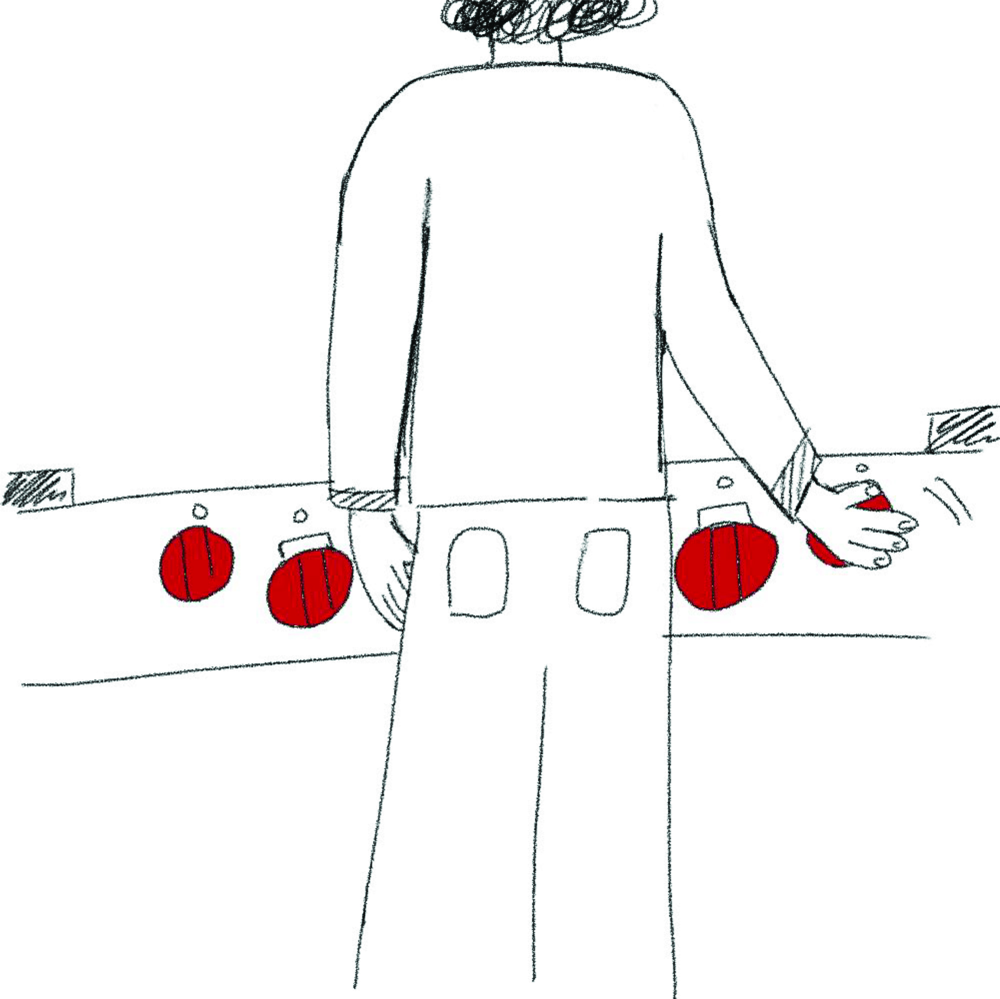

Introduction
We're all stuck at home right now, making it a great time to get creative in the kitchen. My family likes to think that we're a bunch of capable chefs, and we rely heavily on our oven when preparing meals. My parents seem to love it, but I wanted to put it to the test. Is our oven actually a good interface? Or does it just look pretty?
Sketch Description
The key interactive components here are the knobs (which control the heat for the burners, the griddle, and the oven),
the door handles (which open and close the oven), and the central command system (which operates as a clock, timer,
and control for the oven lights). The interface is trying to solve the issue of safely cooking with high heat.
User 1
Sophie's eyes were first drawn to the red knobs, which she found to be the most intuitive and useful part of the interface, noting that the oven was generally easy to use.
She was not a fan of the griddle, as it was hard to tell when it was ready. That was mostly because the warning lights were confusing. She liked the handles, but she wasn't too keen on the system’s control center. She only used the center for its oven light features.
If she were to purchase a new oven interface, she would prioritize good knobs, efficient burners,
easy-to-use ovens, and have consistent safety lights.
User 2
Michael was also first drawn to the “big red knobs.” He values ease of maintenance, but he described the cleaning process as “a pain in the ass.”
Like Sophie, he disliked the warning lights. He also noted that the knob layout was not intuitive. If he designed the oven, he would arrange the burner knobs vertically to match the layout of the stovetop.
Despite those shortcomings, Michael believed that this was the best oven he’d owned or seen. He enjoyed the sturdiness of the handles and doors, and liked the overall aesthetic.
If he were in the market for a new oven, he would want more precise control over the flames, with knobs that locked in at certain positions. It's important to him that the oven looks good.
User 3
Unlike Michael and Sophie, April’s eyes were first drawn to the fan. That feature is most valuable to her because it prevents the cooking smells from wafting into her room. She thought that adding an automatic detector to turn on the fan might be useful, as other users frequently forget to do so themselves.
She enjoyed the fluidity of the knobs, appreciating their lack of resistance. And of course, she liked the visual appeal of the red knobs. Given the option, she would opt for more burners. She also said that the oven is difficult to clean and maintain.
She was not fond of the oven’s handles and doors, which she found clumsy and annoying. She noted that she had to move back whenever opening the doors, which was not convenient. If she purchased a new oven, she would likely add more burners and split the ovens with a central storage area. That way, the oven doors would actually be convenient.
Description
Camryn enjoys her palatial city home, idolizing simplicity and preferring a hands-off approach to life. Camryn is a famous Stockholm interior designer and obsesses over beautiful minimalist objects and environments. She’s in charge of keeping the oven clean, which is tough work. She loves most of the oven’s features, but isn’t too fond of the knob layout and avoids the complex central command center. Camryn embodies the wealthy client that cares more about form than function.
Description
Kevin won his county’s annual pie-off four years in a row from ages 8-11; he’s an avid cook and makes fun, large meals every night. He’s always excited to explore new recipes and test out new kitchen gadgets. He wants his oven to be an all-in-one, immersive experience. Kevin embodies the crafty chef that wants a restaurant-style experience in his own home.
1) Time To Relax
Camryn returns from a client’s home one Tuesday afternoon and finds herself free for the rest of the night. She decides to enjoy this freedom and pops open a bottle of nice champagne.

2) Simplicity
The clock hits 5:00pm, and Camryn decides that she should start thinking about what she wants to make for dinner. She opens up her “Simple Living” Cookbook and thumbs through the pages.
3) Beautiful Design
Having found her recipe––salmon, asparagus, and a hearty grain––Camryn approaches her all-in-one oven. She still gets a kick out of the big red knobs.

4) Good Knobs
She rotates the two griddle knobs and is delighted with their fluidity. She keeps the heat low at 350º, as she plans to slow-cook the salmon fillets.
5) Pain Point: Burner Layout
Next, Camryn turns on the back burners. She meant to turn on the front ones, and heaves a sigh as she fixes her mistake. She fills two pots with water in order to steam the asparagus and cook the grains.
6) Avoiding Complicated Features
While she waits for the griddle to heat and the water to boil, Camryn retreats to her book and continues to read. She has her handheld timer set for 20 minutes, steering clear of the oven’s built-in-timer.
7) At Ease
Camryn makes her meal slowly, enjoying every step of the way. Mile’s Davis’s Kinda Blue plays softly in the background.
8) Pain Point: Maintenance
After everything is fully cooked, she turns off the knobs and scrapes the gunk off of the griddle surface. It’s getting a bit gross, but she’ll wait another two months before the next full cleaning. After all, why waste this splendid night?